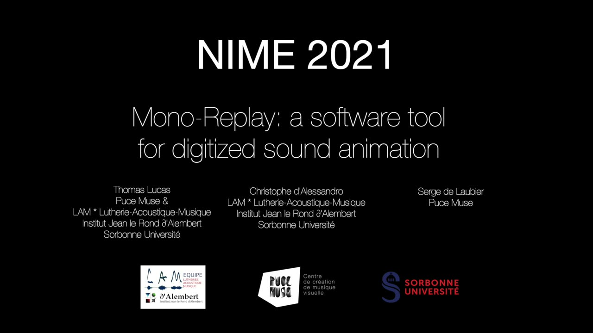
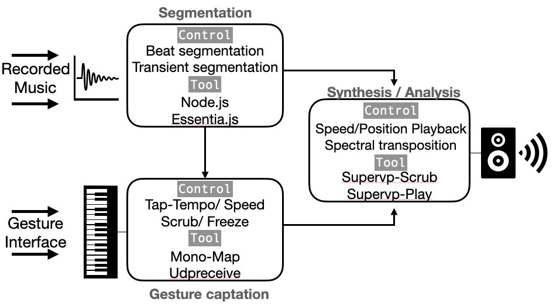
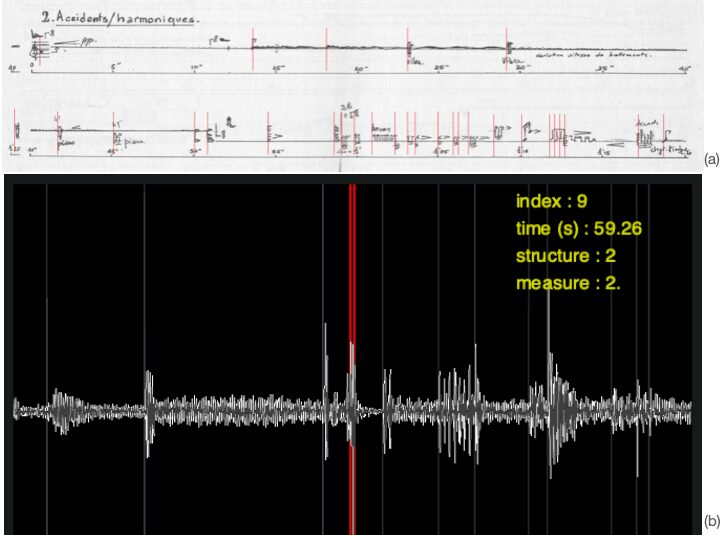
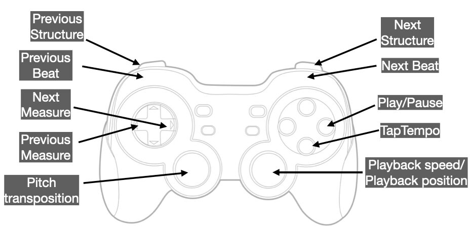
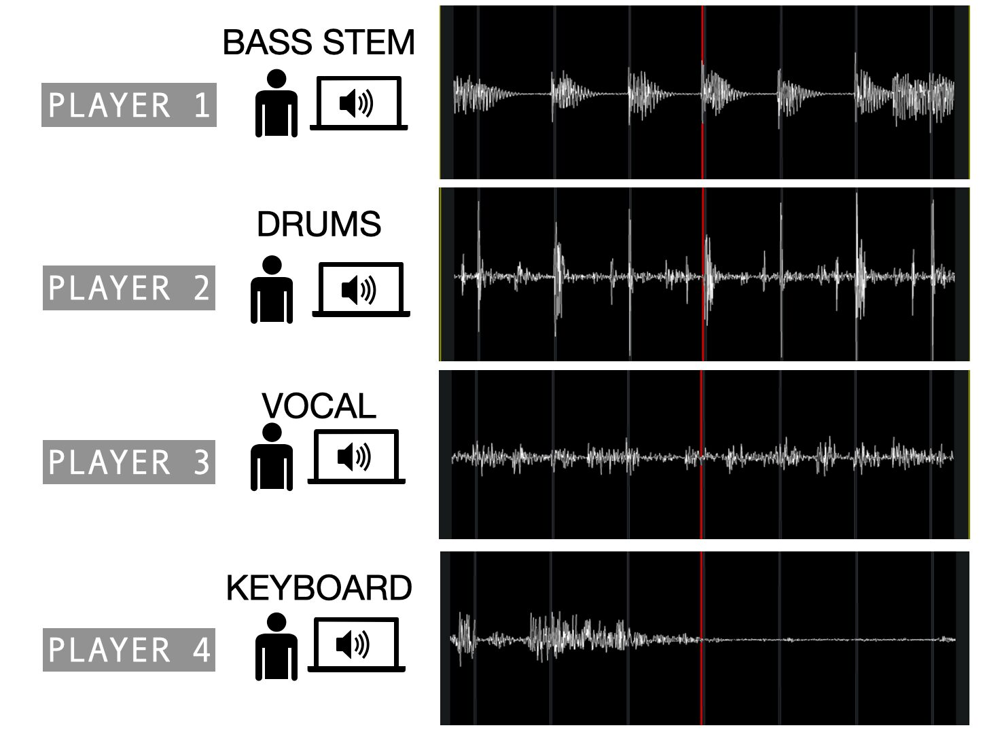
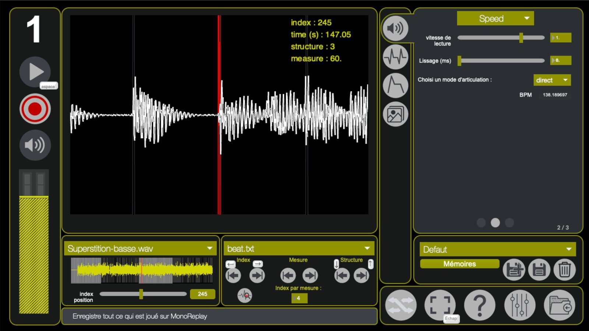

Mono-Replay : a software tool for digitized sound animation
Abstract
This article describes Mono-Replay, a software environment designed for sound animation. "Sound animation" in this context means musical performance based on various modes of replay and transformation of all kinds of recorded music samples. Sound animation using Mono-Replay is a two-step process, including an off-line analysis phase and on-line performance or synthesis phase. The analysis phase proceeds with time segmentation, and the set up of anchor points corresponding to temporal musical discourse parameters (notes, pulses, events). This allows, at the performance phase, for control of timing, playback position, playback speed, and a variety of spectral effects, with the help of gesture interfaces. Animation principles and software features of Mono-Replay are described. Two examples of sound animation based on beat tracking and transient detection algorithms are presented (a multi-track record of Superstition by Steve Wonder and Jeff Beck and Accidents/Harmoniques, an electroacoustic piece by Bernard Parmegiani). With the help of these two contrasted examples, the fundamental principles of “sound animation” are reviewed: parameters of musical discourse, audio file segmentation, gestural control and interaction for animation at the performance stage.

▶Video 1 - Mono-Replay : a software tool for digitized sound animation
Author Keywords
Human-machine interaction, Sonic interaction design, Collective music making
CCS Concepts
•Applied computing → Arts and humanities; Media arts;
1. Introduction : Principles and related works
1.1 Animation of sound
The aim of our work is to design a new kind of instrument allowing for gesture-controlled expressive playback of recorded music samples. The noun "animation" comes from the verb "to animate" for pointing out the nature of this interaction: the performance as a mean of rendering "alive" the fixed material in a recording. "Animating" also means "giving (something) a movement". As the setting in motion involves the displacement of a body and changes of position in space, the concept of animating music stored on medium, indicates some active physical involvement from a person launching a musical process. According to this concept, degree zero of animation of sound would be the minimal gestures on a button to play and and stop a recording [1].
"Animation of sound" articulates automation (as defined in digital audio workstations) and gestural interaction, in order to play recorded music samples with expression, i.e. using gesture controls to convey the performer's musical intentions. This term has been initially introduced by Norbert Schnell [2] in his work on interactive audio applications.
1.2 Interactive music applications
Music on storage media as a creative material
Sound recording has a long history that can be traced back to Édouard-Léon Scott de Martinville's phonotaugraphe (1853) or Thomas Edison's phonograph (1877), allowing the storage of sound waves on paper or a metal cylinder. Music can be recorded as well on storage media, and the idea of using these recordings and playback tools as creative sound instruments came a few decades later. An early example is the poet Guillaume Apollinaire who, using his own voice in poetic declamation, saw the gramophone as a tool for creating a "vertical, non-declamatory poetry with simultaneous action"[3] . Composer Carol-Bérard proposed (20 years before P. Schaeffer's musique concrète) that carefully grouping and associating recorded gramophone sounds could produce well-formed symphonies [4]. However, the first systematic research into composition with fragments of recordings is associated to the musique concrète initiated in 1951 by P. Schaeffer. The "Groupe de Recherche Musicale" carried out all kinds of experiments aiming using storage media for musical and sound creation, experiments and interactions[5].
The question of live rendering, or performance, for electroacoustic music has been addressed in various ways. The "Active Listening Interface" [6] by Masataka Goto aims at taking the user of audio playback systems out of her/his sole role of passive listener. "Active listening" means physical interaction with the system to enhance the listening experience: the user can e.g. switch from one chorus to the other, accentuate or diminish the drum part or transpose and slow down specific parts of a song [7].
The idea that the user can be more than a mere passive listener of a particular song and can interfere in its execution totally relates to the evolution of design concepts, from design to with the idea of co-design [8]
The use of Loudspeaker orchestras, or Acousmonium, is another way to perform recorded electroacoustic music [9].
However the most widely used way to animate recording is DJing or "turntablism". Several sophisticated techniques for multiple vinyl records expressive playback have been elaborated, including speed variation, scratching, mixing, digital audio effects etc. Digital virtual DJing has also been developed, allowing for various effects on a graphic tablet[10][11] .
The Méta-DJ software developed by PUCE MUSE (freely available at www.meta-librairie.com), following the Méta-malette project [12] , Méta-DJ offers various real-time recordings transformations. It is especially designed for collective practice, along the line of the OrJo project [12] (Joysticks orchestra) . Méta-DJ has been used in the Great DJs Orchestra (Le Grand Orchestre de DJs) made of secondary school pupils playing together a musical piece on their personal computer.
Sound animation using anchor points: Méta-piano, Méta-instrument and performative voice synthesis
Several methods for sound animation using performative control of anchor points in the timeline of recorded music have been proposed. A sophisticated system for expressive performance of piano music has been developed in Jean Haury's Méta-Piano [13]. This system allows a musician to perform a piece on a digital piano using a MIDI keyboard reduced to a few keys (typically 1 to 5 or 8).
Unlike in the actual piano, action on the keys does not control all details of the score, but the sequencing (including rhythm, articulation, phrasing, tempo and accentuation) of selected time events previously marked in the the score. The musician proposes her/his own interpretation by controlling meta-parameters of the musical discourse, and not by directly producing all the notes in the score, as it is usually the case. The Meta-Piano makes it possible to concentrate entirely on the expressive parameters of a keyboard interpretation, using the recording as material and as a shortcut to resume or reduce the instrumental technique itself. Music that would not be playable as such on the piano (e.g. string quartet transcriptions) can be truly and expressively performed using the Meta-Piano, even by impaired people.
Complex scores can be performed using similar principles using Serge de Laubier's meta-instrument. Unlike the reduced keyboard of meta-piano, the meta-instrument encompasses a large number of sensors in a is a sophisticated digital interface [14]. The Meta-instrument is a preferred interface for Mono-replay, as shown in video 1 (0:06 to 0:37).
Voice samples animation, coined performative voice synthesis, has been developed since the Speech conductor by Christophe d'Alessandro and colleagues. The Voks [15] [16] system is based on temporal blocks concatenation using time anchor points placed on voice samples. Thanks to a vocoder, the performer controls parameters such as intonation, vocal quality and vocal strength. Accurate melodic control is achieved using a graphic tablet. Like in the preceding systems, a preliminary analysis and labelling of the the sound samples is necessary. In this case time anchors are placed for syllable re-sequencing. Two rhythmic control points per syllable are necessary for voice control as triggering and releasing are as important for musical performance.
Music information labelling
The sound animation methods described above rely on some sort of musical information labelling in the audio stream. Musical information labelling is a two sided process: on the one hand is can be seen as a musical analysis problem, on the other hand as a signal processing problem. From the point of view of signal processing it is possible to automatically extract accurate information on the audio content [17] without any human listening and analysis. For instance, in Philippe Gonin’s study [18] an algorithm determines the novelty curve on several improvised versions of the Pink Floyd’s Interstellar Overdrive. This curve provides information about sudden spectral variations directly from audio code, in this case change of tonality. To find out which algorithm is the most appropriate for retrieving different musical discourse features, theoretical musical knowledge is mandatory. For example, to manually segment a piece of Free Jazz as per its structure, prior to subjecting it to an automatic segmentation, a knowledge of the studied record is indispensable[19]. The bridge between signal processing and musical analysis is MIR (Music Information Retrieval). In this field, scientists and musicologists work together to design automatic systems capable of extracting information from musical discourse directly from the digitized audio. MIR is used in Mono-Replay as well for determination of anchor points in the audio stream.
1.3 Mono-Replay
Mono-replay is based on principles similar to the Méta-piano and Voks for the piano and voice, but for any kind of recorded music. Sound animation relies on a preliminary analysis of the sound material in terms of a three-level hierarchical timeline. Anchor points are defined along this time line as explained in Section 2.
Then comes definition of the instrument itself, an instrument being defined as a gestural interface and a set of possible interactions.
A Mono-replay performance is based on a specific setting of recording, anchor points, gestural interface, gesture to effect mapping, playing mode and digital audio effects.
Mono-Replay embeds two main functional aspects: the segmentation by analysis and labelling of the content of the recording, and then the definition of the instrument as an assembly of interfaces to manipulate the labelled content. Image 1 gives a schematic view of the principles of Mono-Replay and its two main components.
Note that like in the Méta-Dj and OrJo project, Mono-Replay is especially fit to collective practice, as it runs on various platforms, with various interfaces (including cheap video game interfaces). Examples will be given below.


Schematic view and principle of Mono-Replay. Analysis and segmentation of a recorded file based on puls and transient detection; Gesture captation with complex mapping on Synthesis parameter; Producing audio by controlling Synthesis parameter.
2. Musical discourse units and audio labelling
The first stage to design an expressive interaction scenario for digitized sound animation is segmentation and labelling of the audio stream into time blocks that will be used in the musical discourse. In the case of Mono-Replay, this segmentation is usually based on three layers: the notes or perceived beats layer, the metrics or measures layer and the musical phrases layer.
This first stage aims at positioning hierarchical anchor points in the time flow in order to identify the phases or blocks of time that we wish to manipulate. There are two main ways for producing this kind of segmentation :
A Multi-feature Beat Tracking [20] algorithm allows to create segmentation linked to metric division like measure, whole note, half note, quarter note etc. This method of segmentation is mostly relevant when working on a record showing a clearly perceptible tempo.
The SuperFlux [21] onset detection algorithm is used for music pieces without clearly perceptible tempo. In this case, individual onsets are searched for instead of regular/periodic beats or pulses.
In the following paragraphs we will describe each of these methods and illustrate them with musical examples.
2.1 Segmentation based on pulse detection : The case of “Superstition”
Beat tracking wits essentia.js
The beat can be defined as the "perceptually induced periodic pulse that is best described by the action of foot-tapping to the music" [22]. When listening to music that has a pulse, ancillary movements synchronised with the tempo of the piece often happen. A segmentation method based on pulse detection (when it exists in the music) is developed, because it allows for intuitive audio stream control based on pulsed beats.
The Multi-feature Beat Tracking [23] algorithm seemed fit for this application. This algorithm, available in the free and open source Javascript library essentia.js [24] , is integrated to Mono-Replay using the Max external node.js . It determines nine transient detection functions using different spectral methods, in order to keep only the most suitable for the type of sound at hand. As a matter of fact, transients of a plucked string sound do not have the same spectral properties as transients of a rubbed string sound. A method based on similarity matrices compares each of the nine sequences obtained and selects the one showing the greatest similarity to the others as the most representative. This method gave the best results when compared with sixteen other pulse determination systems[25].
Three level segmentation of Superstition
Superstition is a famous funk rock piece by Stevie Wonder and Jeff Beck (1972). The recording in the album Talking Book is available in stem format consisting of a multi-track file of the main instrumental parts (drums; vocal; bass; brass section; clavinet). This format is often used by DJ's who need to play each instrumental part of the same recording separately In our case the stems are well suited for a ensemble playing of Mono-Replay, each musician expressively controlling a separate instrumental part (image 4). Three levels of segmentation are useful for synchronisation, because they allow for accurate segment selection and easy time jumps (see video 1 - 01:32 to 01:56).
First level segmentation : the Beat
With the Multi-feature Beat Tracking algorithm [26] we create a segmentation according to the pulse of the track. Each segment is bounded by two consecutive pulses. For Superstition, the Multi-feature Beat Tracking algorithm finds a tempo value of 102.3 BPM. Each segment made by two consecutive pulses has a duration of approximately 0.56 second.
Second level segmentation : the Measure
Once we get a beat segmentation we choose a rhythm signature corresponding to a certain number of pulses per segment. For Superstition we choose a number of 4, which is the rhythmic signature of the piece. Each time we count 4 pulses we create a new second level segmentation.
Third level segmentation : the Structure
The last level of segmentation is called “structure” and informs the user about the start of a new composition part. For Superstition we create this segmentation manually by indicating the time position of the Intro, Verse 1, Chorus, Verse 2, Chorus, Bridge, Verse 3 and Outro of the track.
A similar type of segmentation is used for any kind of metrical music. An example is given in video 1 (0:06 to 0:37) showing a short piece of Schubert’s string trio in C minor.
2.2 Segmentation based on transient detection : The case of “Accidents/Harmoniques”
Transient detection with Essentia.js :
Research in Musical Information Retrieval (MIR) has led today to extremely efficient audio content analysis tools. By identifying values above a threshold level on the novelty curve, the SuperFlux [27] algorithm, available in the free and open source Javascript library essentia.js [24], can detect transients of percussive sounds, as well as softer transients marked by a fundamental frequency change.
The spectral flux is the sum of the band-by-band difference in the amplitude of the spectrum obtained by a short-term Fourier transform. The maxima observed on the spectral flux representative curve - also called the novelty curve - indicates the sudden spectral variations due to the occurrence of a new event, which we associate with a new note in the analysed recording. By retrieving the temporal positions of these maxima, we obtain a collection of time indexes for important events (i.e. transitions or transients) in the recording (Image 2).
Segmentation of Accidents/Harmoniques


A representation of the segmentation with the Superflux Algorithm on a musical transcription of Accidents/Harmoniques (a) and on the waveform display on Mono-Replay GUI (b).
Accidents/Harmoniques is the second movement of De Natura Sonorum, an electro-acoustic piece composed by Parmegiani (see video 1 - 01:56 to 02:17 ). This movement does not have an identifiable metrical structure, so we do not attempt to determine a pulse or tempo here. Using signal-processing tools that we detail below, we develop a collection of event-based indexes: the temporal position of each sound event beginning (first level segmentation) or of groups of sound events - second level segmentation - with sufficiently brief and perceptually pronounced attack transients is stored in a text file.
3. Gestural control in performance
Like other interactive audio applications [2], Mono-Replay is based on three pillars: audio analysis and segmentation, gesture capture and analysis, and sound synthesis (see Image 1). In this section interactive and expressive animation is discussed. The different playing modes available in Mono-Replay for controlling audio synthesis are presented. As an example, a multi-player usage of Mono-Replay for animation of a multi-track version of Superstition is described (image 4).
3.1 Control interfaces
A Mono-Replay instrument is made of a computer running the software and an interface for controlling the performance. Mono-Replay belongs to a software suite (the Mono- ) developed at the PUCE MUSE company for artistic and pedagogic electronic music applications. This environment offers a common framework for multiple interface selection, sound visualisation, file formats, graphical interface design.
Part of the control for Mono-Replay is done using the computer interface (keyboard and mouse). Each musical project is made of the recorded sound and associated time segmentation labels. The projects are loaded and selected using the computer GUI. Then other options for a specific performance are selected: the rhythmic playing mode, spectral modification, audio output.
For many years now, PUCE MUSE explores the correlation between instrumental gesture and audio perception in pedagogical contexts [28]. Several types of interfaces can be used in conjunction with Mono-Replay. The most sophisticated is the Meta-Instrument IV, allowing for accurate control of more than 34 sensors driven by both elbows, wrists and fingers (see video 1 : 0:06 to 0:37) . For pedagogic purposes or laptop orchestras, more usual video game interfaces like joysticks or gamepads can be used as well (see video 1 : 0:36 to 01:56 ).
The control interface must at minimum offer buttons and sliders for time segment selection. Continuous controllers are useful for spectral modifications or continuous time control.
The mapping proposed for controlling Mono-Replay is schematised in the figure below:


A Mapping to control Mono-Replay on Logitech gamepad
This mapping allows for an easy interaction to move from a beat/measure/structure to another. The main control of Mono-Replay are accessible on the palm of the hand. Users are often familiar with the use of Gamepads. This ability helps in a quick start of expressive playing and allows the user to focus on the sound produced thanks to familiar control gestures
3.2 Controlling speed and position playback
According to the methodology described in the previous Section a three-tier segmentation has been created for the stems of Superstition. It can be used to play back music from a segment to another during performance thanks to 6 playing modes :
• TapTempo direct : The playback speed of the audio file is determined by the tempo beaten by the user. If the user executes two consecutive beats with a duration corresponding to the detected tempo of the track, the playback speed is set to 1. For Superstition the tempo determined by the Multi-feature Beat-tracking algorithm is 102.3 BPM ; which corresponds to approximately 0.56 second between two consecutive beat.
• TapTempo direct next : this playing mode works exactly as theTapTempo direct mode with the difference that the new playback speed value is set at the beginning of the next segment.
• TapTempo next : The playback position and speed are set up at each new pulse beaten by the user. The speed is determined by the duration between two consecutive beats executed by the user and the position is set to the next segment each time the user executes a beat.
• Speed direct : The playback speed is set with a slider and can take a value between 2 (twice as fast) and -2 (twice as fast in reverse mode). (see video 1 - 0:36 to 0:56 )
• Speed freeze : This playing mode works exactly as the Speed direct mode with the difference that at the end of each segment the speed is set to 0; which generates an audio freeze. (see video 1 - 0:57 to 01:56)
• Scrub : In this playing mode we control the position playback with a slider. The slider is bounded with the beginning and the end of the observed segment. (see video 1 - 01:56 to 02:17 )
3.3 Polyphonic animation of a stem file
MonoReplay is designed for collective music making. To explore the musical usability of MonoReplay in this context several workshops with musicians experienced in musical interfaces were organized, aiming at polyphonic rendering of stem files. A Stem file is a multitrack audio format released by Native Instrument in 2004 that enables DJ or live performers to play different separate parts of a song. A stem file contains vocals, drums, bass and keyboard tracks of the same recording. Playing all tracks of the stem file together produces a mixed version of the piece. A stem file for of Superstition was used here containing a four separate tracks with drums, bass, vocals and clavinet + brass section. Our setup is made of four personal computers running Mono-Replay. Each computer uses the same segmentation file but a different instrumental track.
With the first computer we control the playback’s speed and position of the bass track of Superstition; with the second one we control the playback’s speed and position of the drums track; with the third one we control the playback’s speed and position of the vocal track; and with the last one we control the playback’s speed and position of the keyboard & brass section track. Every player can move on the track according to the three levels segmentation described below. Each player can choose a playing mode from those described above to control the the playback’s speed and position of the record they animate. Experience shows that the best mode to play together with a synchronised phase and speed is the mode TapTempo Direct. This mode allows to control the speed and the phase of the playback each time a user clicks on the mouse. If one player counts aloud a tempo it’s easy for everyone to synchronise and click on their mouse simultaneously. If each player plays consecutive clicks with the same duration and phase, they are controlling the playback’s speed and position of the record synchronously.


Multiplayer use of Mono-Replay : Each player control the speed and position playback of an instrumental part of a stem version of Supersition . The segmentation is the same for each instrumental part and it is based on Multifeature beat-tracking algorithm
3.4 Spectral transformation and audio effects
Expressive performance in sound animation is mainly based on time control of labelled events. Other relevant sound parameters can be controlled as well. First of all, the sound level or sound intensity is easily controlled. Mono-Replay is an analysis-synthesis process. Sound samples are processed using a vocoder. SuperVP and groove~ are two phase vocoders implemented in the form of configurable Max externals, allowing accurate control over the position or playback speed of an audio segment, while maintaining very high definition in the sound textures played back. The SuperVP is used to control the position of the audio file in the "Scrub" mode, while the groove~ object is used in the "Speed" mode to control the playback speed of the segment. The vocoder is useful for many kinds of spectral sound transformation like filtering, phasing, tuning, pitch modification and so one. As the sound samples are enriched with marks corresponding both to the score and to the actual sound content of the recording, sound transformations and audio effects can be applied to specific segments according to real time controls provided by the interface.
4. Conclusion
Various forms of sound animation have been developed since the advent of sound recording. Even the simple gesture of playing back a recording can be considered as a basic form of sound animation. Musique Concrete developed musical composition based on recording, DJing developed musical performance based on recording. The present work merges these musical approaches with the instrumental (in the sense of NIME) approach.
The Mono-Replay software allows for building instruments for sound animation. It is a two-stage process. In a first stage, the recorded music sample is analyzed and labelled, using MIR techniques for segmentation (beat tracking or transient detection) into musical units.
The main challenge in the segmentation process is to retrieve relevant information from the digitized sound, according to musical structures. Mono-Replay embeds a three scales segmentation method for this purpose. The first scale gives time position of rhythmic events or a pulses. The second scale gives time position of a group of rhythmic events or pulses and the third scale gives information on the main composition parts of the piece (e.g. intro, chorus and verse in the case of Superstition).
At the performance stage, Mono-Replay gives control on these time labels for playing and interpreting the piece. Each control point at the three segmentation scales can be easily reached. This allows for fine timing control, comparable to instrumental control, and thus to collective practice.
To go beyond the control offered by the mouse and the keyboard of the computer, simple or sophisticated interfaces can be used, through a mapping process. A Gamepad for instance allows for keeping all the controls of Mono-Replay in the palm of the hand. Familiarity with Gamepads allows to fully engage the player in the performance. The meta-instrument is another kind of interface we tried. Pads and graphic tablets or any other type of NIME could be used as well.


The Graphic User Interface of Mono-Replay
As for the computer GUI, for the moment, we only display the waveform and indexes placed on the audio file in our graphical interface (Image 5). This representation is rather limited in terms of musical information and does not allow to anticipate the precise nature of the next sound that will be played. It would be necessary to integrate a more musical representation, such as a score that would scroll synchronously with the sound. One possible way could be to integrate an iconic view of the sound to get a representation based on sound parameters.
Mono-replay is a fully functional application that will be distributed by PUCE MUSE in the Mono suite. It will then be used in professional artistic practice and in pedagogic environments, to introduce various audiences (such as secondary classes and conservatory students) to electronic instruments and electronic music.
Acknowledgments
This work has received financial support from the Ile de France region and the European Union through the SMAC project (ERDF IF0011085). The authors are indebted to Jim Murphy for editorial assistance, and to 3 anonymous reviewers for their positive criticism that helped in improving the paper.
Citations
- ↩T. Lucas, S. de L., C. D’Alessandro. (2020). Animer la musique sur support. In Acte des Journées d’Informatique Musicale 2020. Strasbourg.
- ↩Schnell, N. (2013, October). Playing (with) Sound Of the Animation of Digitized Sounds and their Reenactment by Playful Scenarios in the Design of Interactive Audio Applications. Austria.
- ↩Appolinaire, G. (1991). Oeuvres en prose complètes. In Galimard (Ed.) (Vol. 2, p. 982). P. Caizergues, M. Décaudin.
- ↩Battier, M. (2007). What the GRM brought to music: from musique concrète to acousmatic music. Organised Sound, 12, 189–202.
- ↩Schaeffer, P. (1966). Traité des Objets Musicaux. Paris, France: Seuil.
- ↩Goto, M. (2007). Active Music Listening Interfaces Based on signal Processing. In Proceedings of the 2007 IEEE International Conference on Acoustics, Speech, and Signal Processing (pp. 1441–1444).
- ↩Goto, M. (2003). A Chorus-Section Detecting Method for Musical Audio Signals. In Proceedings of the 2003 IEEE International Conference on Acoustics, Speech, and Signal Processing (Vol. 14, pp. 1783–1794).
- ↩Sanders, L., & Stappers, P. J. (2014). From Designing to Co-Designing to Collective Dreaming: Three Slices in Time. Interactions, 21(6), 24–33. https://doi.org/10.1145/2670616
- ↩Bayle, F. (1993). Musique concrète, musique acousmatique, propositions… …positions, (Musique concrète, acuosmaic music, propositions ... ...positions). In Ina-GRM-Buchet/Chastel (Ed.). Paris.
- ↩K. Falkenberg Hansen, R. B. (2006). Mapping strategies in DJ scratching. In Proceedings of the New Interfaces for Musical Expression (pp. 188–191). IRCAM.
- ↩K. Falkenberg Hansen, R. B. (2010). The skip-proof virtual turntable for high-level control of scratching. Computer Music Journal, 34, 39–50.
- ↩S. de Laubier, H. G., L. Feugère, G. Bertrand, V. Goudard, C. d’Alessandro. (2012). OrJo et la meta-malette. In Actes des Journée d’Informatique Musicale 2012 (pp. 227–232). Mons, Belgique.
- ↩Haury, J. (2009). La pianotechnie ou notage des partitions musicales pour une interprétation immédiate sur le métapiano. In 14èmes Journées d’Informatique Musicale (pp. 9–17). Grenoble.
- ↩Couprie, P. (2018). “Le Méta-Instrument : genèse et évolution d’un nouvel instrument.” (The Méta-instrument: genesis and evolution of a new novel instrument.). Musique, Images, Instruments, vol 17, pp 230-245.
- ↩D’Alessandro, C., Xiao, X., Locqueville, G., & Doval, B. (2019). Borrowed Voices. In Music Proceeding of the International Conference on New Interfaces for Musical Expression (p. 2.2-2.4). Porto Alegre, Brésil.
- ↩D’Alessandro, C., Xiao, X., Locqueville, G., & Doval, B. (2019). Borrowed Voices. In Music Proceeding of the International Conference on New Interfaces for Musical Expression (p. 2.2-2.4). Porto Alegre, Brésil.
- ↩Peeters, G. (2003, 0). A large set of audio features for sound description (similarity and classification) in the CUIDADO project.
- ↩Gonin, P. (2019). Interstellar Overdrive de Pink Floyd et le processus de création à travers le prisme de l’improvisation collective : du chaos à l’ordre ? Musimédiane, 11.
- ↩M. Tahon, P. M., Z. Belgrith, J. M. Chouvel. (n.d.). Segmentation automatique de catégories musicales : Étude exploratoire sur le Free Jazz. In JIM 2019.
- ↩Zapata, J. R. (2014). Multi-Feature Beat Tracking. IEEE/ACM Transactions on Audio, Speech and Language Processing, 22(4), 812–825.
- ↩S. Böck, W. G. (2013). Maximum Filter Vibrato Suppression for Onset Detection. In Proceedings of the 16th International Conference on Digital Audio Effects (DAFx-13) (pp. 55–61). Maynooth, Ireland.
- ↩Jehan, T. (2005). Creating Music by Listening.
- ↩Zapata, J. R. (2014). Multi-Feature Beat Tracking. IEEE/ACM Transactions on Audio, Speech and Language Processing, 22(4).
- ↩D. Bogdanov, X. S., N. Wack, S. Gulati, P. Herrera, O. Mayor, G. Roma, J. Salomon, J. R. Zapata. (2009). ESSENTIA: an Open-Source Library for Sound and Music Analysis.
- ↩Holzapfel, A., Davies, M. E. P., Zapata, J. R., Oliveira, Jo∼ao Lobato, & Gouyon, F. (2012). Selective Sampling for Beat Tracking Evaluation. Trans. Audio, Speech and Lang. Proc., 20(9), 2539–2548. https://doi.org/10.1109/TASL.2012.2205244
- ↩Zapata, J. R. (2014). Multi-Feature Beat Tracking. IEEE/ACM Transactions on Audio, Speech and Language Processing, 22(4), 816–825.
- ↩S. Böck, W. G. (2013). Maximum Filter Vibrato Suppression for Onset Detection. In Proceedings of the 16th International Conference on Digital Audio Effects (DAFx-13) (pp. 55–61). Maynooth, Ireland.
- ↩Patiño-Lakatos, G. (2015). Expérience à l’institut Gustave Baguer D’Asnieres. In Internal report, LAM-D’Alembert, Sorbonne Université.